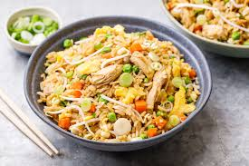

Low-Calorie Asian Chicken Fried Rice

Description
This low-calorie, high-protein chicken fried rice is a delicious and filling meal option. Each serving contains
about 588 calories and approximately 60 grams of protein, making it a great choice for those looking to eat
healthy. It’s easy to prepare and packed with flavor, perfect for a satisfying lunch or dinner. Enjoy a hearty
bowl that keeps you full without the extra calories!
Ingredients
- 200g chicken breast, cubed
- 100g white rice
- 1 onion, shredded
- 1 cup cabbage, shredded
- 1 carrot, julienned
- 1/2 Capcium,chopped
- 1 egg
- Soy sauce, to taste
- Assorted spices (your choice)
Steps
- Make small cuts in the chicken.
- Season with:
- Salt
- Garam masala (spice blend)
- Black pepper
- Red chili powder
- Any additional spices you prefer.
- Drizzle 1 tablespoon of oil over the chicken and mix well.
- Boil rice or use leftover rice from the fridge.
- Set aside.
- Heat a pan on low to medium flame.
- Add the marinated chicken and cook for 5-6 minutes on each side.
- Remove from the pan and set aside.
- In the same pan, lower the heat and add 1 teaspoon of oil.
- Add chopped onions and sauté until browned.
- Stir in your choice of vegetables, adding a few tablespoons of water to help them fry.
- Push the veggies to one side of the pan.
- On the other side of the pan, crack in a raw egg and scramble it until cooked.
- Mix the cooked egg with the vegetables.
- Add the cooked chicken back to the pan.
- Pour in soy sauce and vinegar to taste.
- Finally, add the cooked rice and mix well.
- Enjoy your delicious Spicy Low Calorie High Protien Chicken Fried Rice!